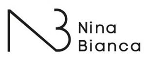
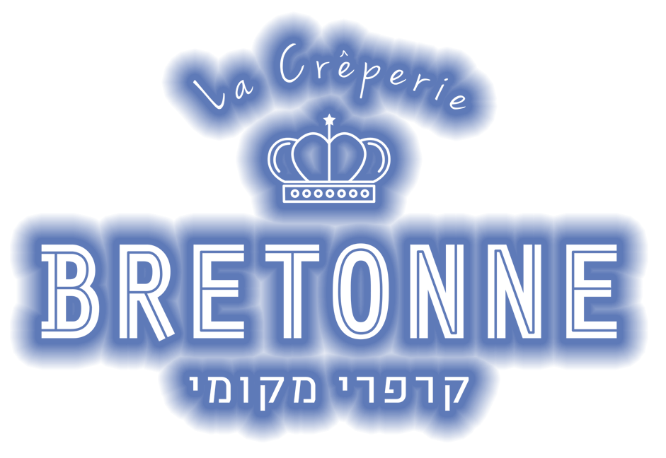
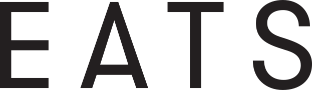

שירותי ייעוץ עסקי למסעדות
ייעוץ עסקי ותפעולי למסעדנים • אופטימיזציה של Food Cost ו-Labor Cost • הקמת מסעדות וקונדיטוריות שמחזירות את ההשקעה תוך שנתיים או פחות
מאות לקוחות מאז 2006 יד ביד ביחד להצלחה משותפת
אסור לעבור 60% פוד קוסט + לייבור קוסט
ייעוץ עסקי ותפעולי למסעדנים • אופטימיזציה של Food Cost ו-Labor Cost • הקמת מסעדות וקונדיטוריות שמחזירות את ההשקעה תוך שנתיים או פחות
מאות לקוחות מאז 2006 יד ביד ביחד להצלחה משותפת
אסור לעבור 60% פוד קוסט + לייבור קוסט
כפי שיודעים מאות הלקוחות שלנו לאורך השנים





מתחילים באבחון ממוקד של המספרים, התפעול והמטרה העסקית — ומתקדמים לתוכנית עבודה שאפשר למדוד.
לשאלות נפוצותדברו איתנושירן לוי קרייצ׳ר וניצן בנט • ייעוץ עסקי מקצועי למסעדות ובתי קפה